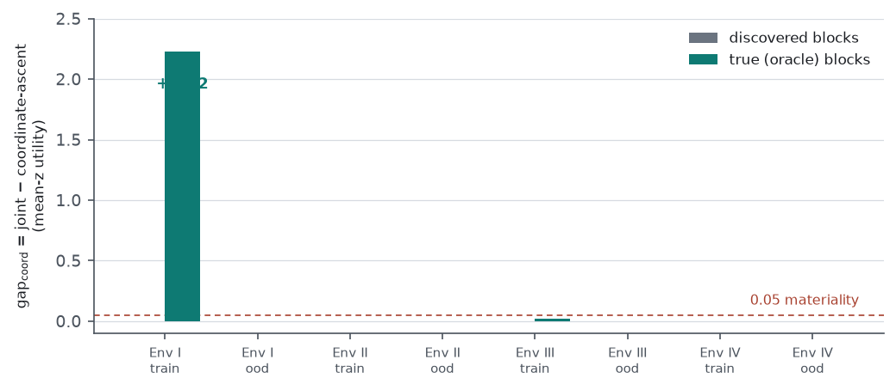
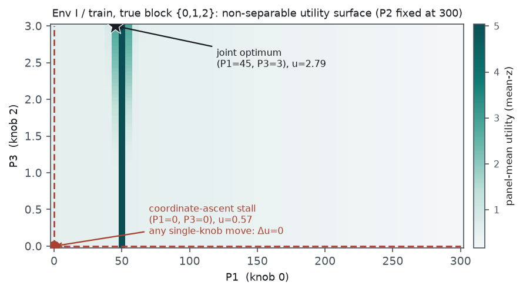
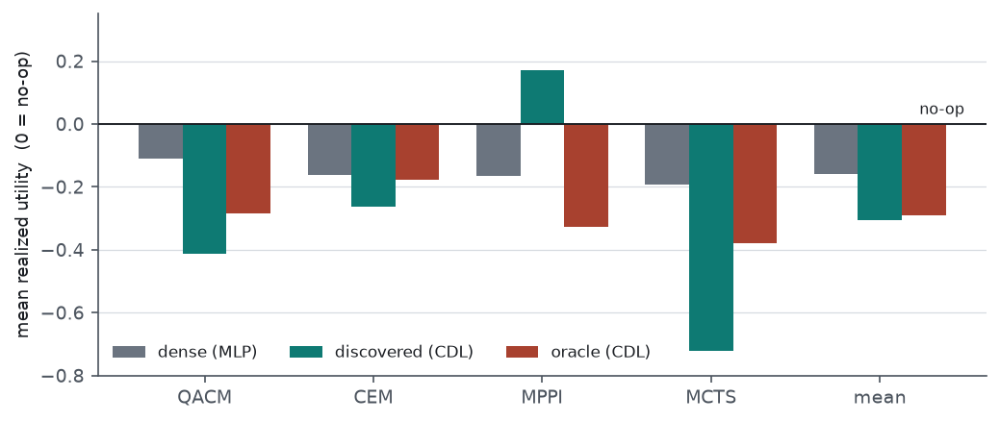
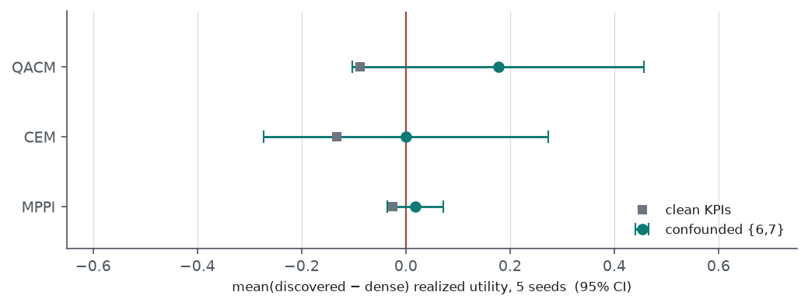

evaluate.py on those checkpoints without retraining.
We test two decision-level mechanisms by which the learned causal structure could improve mitigation. For
block-coordination, we compute a model-free coordination gap on the true simulator — the utility of a
global joint solve over a coupled knob block minus the utility of coordinate ascent over the same block. On
the discovered enumeration blocks the gap is at or below +0.001 (mean-z)
in every environment and cell. The discovered graph, however, under-recovers coupling: it drops
shared-parameter edges present in the ground-truth adjacency. On the true blocks, the gap is
+2.224 in one cell — Env I / train, block
{0,1,2} — and at or below +0.017 in all other
environments and cells. That single positive gap is a verified non-separable interaction (one KPI requires
two knobs moved together), and the responsible knob is exactly the edge the discovered graph dropped. It is
localised to that one cell and block, and it is reachable by coordinate ascent with random restarts, so a
global joint solver is sufficient but not uniquely required. For deconfounding, a decomposition of realised
utility by KPI on Env IV shows a larger single-seed advantage of the structured model over a dense
model at the confounded KPIs; across five matched mitigation-seed re-evaluations this advantage is
not statistically distinguishable from zero for any planner (all 95% confidence intervals include zero),
and the single-seed value was not stable to an unrelated change in the planner set. Only the sign of the
confounded-minus-clean differential is consistent. A dense/structured/oracle comparison across planners on
Env IV (out-of-distribution) shows the dense model decides as well as or better than the structured
model on the planner average. Separately, the ModelBasedMCTS planner does not terminate on
some mitigation seeds. Neither mechanism yields a robust decision-level advantage on the current
environments; both point to graph-recovery quality and benchmark structure as the limiting factors.
The 2026-08-25 gate established that, at the decision level, the true enumeration graph is not materially better than the discovered graph (STOP), and the prediction-level reports established that the causal structure helps prediction. Neither shows that having the structure improves the decision relative to not having it. We examine two mechanisms by which it could. Block-coordination: the causal graph identifies which knobs feed a shared KPI; a planner that resolves such a block jointly could reach an action that resolving each knob independently cannot. Deconfounding: under a hidden confounder, two KPIs are observationally correlated with no causal edge between them; a structured model constrained to the true parents cannot absorb that spurious association, whereas a dense model can, so the structured model could make a better intervention at the confounded KPIs. Env IV carries an explicit latent confounder Z injected into the observation of KPIs 6 and 7 with no edge between them, which makes it the test case for deconfounding.
Block factorization. Two knobs are placed in the same block when they share a downstream KPI child
in a given adjacency, using the shipped orientation
(graph[kpi_node, param_id], conflict-detection convention; knobs are the low state indices,
KPIs the high indices). Blocks are the connected components of that relation. We compute blocks from the
discovered enumeration graph and from the ground-truth adjacency
(build_oracle_enumeration_graph).
Coordination gap (model-free, true simulator). For each coupled block we reproduce the evaluation trajectory and, at each panel, evaluate the block’s affected xApps’ panel-mean true utility over (i) a one-pass independent per-knob resolution (greedy_single), (ii) coordinate ascent over the block to convergence (greedy_iter), and (iii) a global joint search over the block (full grid for |B|≤3, otherwise randomised). We report two gaps: gap_naive = joint − greedy_single and gap_coord = joint − greedy_iter. The second is the quantity of interest: a global joint solve exceeds coordinate ascent only if the block’s utility surface is non-separable. We report under the true-utility (mean-z) objective; the shipped saturating objective is reported in the source tables but its argmin is a flat-region tie-break and is not used for the verdict.
Correlation-block control. To separate “causal” from “any grouping”, we build a correlation graph (absolute Pearson association of each candidate parent with each next-KPI, rank-matched to the causal edge count) and compare the blocks it induces to the causal blocks, matching on the parameter→KPI edge count so the comparison is not inflated by the causal graph’s KPI→KPI budget.
Decision-level model comparison and per-KPI decomposition. Using existing checkpoints, we evaluate
the dense (MLP), discovered (CDL), and oracle (CDL) models under all planners on Env IV
(out-of-distribution), matched on training seed, mitigation seed, and planner configuration, with the dense
model enumerating from the discovered graph so its decision set matches the structured model. Realised
utility is the true-environment utility at each planner’s selected action. We attribute each panel to
its primary xApp/KPI and take that xApp’s realised utility. For the deconfounding test we re-run the
dense and discovered evaluations under five mitigation seeds (independent env realisations) and treat
the seed, not the panel, as the unit of replication, reporting per-planner mean and a 95%
t confidence interval of the (discovered − dense) differential at
the confounded KPIs and at the clean KPIs. ModelBasedMCTS is excluded from the multi-seed set
because it does not terminate on some seeds (§7); dropping it perturbs the shared random stream, so the
remaining planners’ absolute values shift slightly, but both arms are evaluated identically at each
seed and the differential is within-regime.
The discovered enumeration graph recovers fewer couplings than the ground-truth adjacency in every environment (Table 1). The dropped edges are shared-parameter dependencies — for example, in Env IV the ground truth couples {0,1,2} and {3,4,5}, while the discovered graph couples only {0,1} and treats knobs 2–5 as independent. This under-recovery is the reason a coordination gap on the discovered blocks is not, on its own, evidence that no coordination structure exists (§4).
| Env | discovered coupled blocks | ground-truth coupled blocks |
|---|---|---|
| I | {0,1} {3,4} {5,6} | {0,1,2} {3,4} {5,6} |
| II | {0,1,3,4,5} | {0,1,2,3,4,5,6,7} |
| III | {0,1,8} {3,4} | {0,1,2,8} {3,4,5} |
| IV | {0,1} | {0,1,2} {3,4,5} |
On the discovered blocks, gap_coord (mean-z) is at or below +0.001 in every environment and cell: coordinate ascent reaches the joint optimum, so a global joint solve adds nothing. On the ground-truth blocks the picture is the same everywhere except one cell: gap_coord is at or below +0.017 for all Env II, Env III, and Env IV true blocks and for Env I out-of-distribution, and it is +2.224 for Env I / train, block {0,1,2} (Figure 1, Table 2). The one-pass gap gap_naive is positive in several cells (up to +0.52 on Env II / train), i.e. the current one-pass per-edge resolution does leave utility unclaimed on coupled blocks; but coordinate ascent recovers it, so that portion does not require a joint solver.

| Env / cell / block | coord. ascent | joint | gap_coord | gap_naive |
|---|---|---|---|---|
| I / train / {0,1,2} | +0.568 | +2.792 | +2.224 | +2.224 |
| I / ood / {0,1,2} | +3.950 | +3.950 | +0.000 | +3.411 |
| II / train / {0..7} | +1.825 | +1.825 | +0.000 | +0.517 |
| III / train / {0,1,2,8} | +1.800 | +1.802 | +0.017 | +0.728 |
| IV / train / {0,1,2} | +2.116 | +2.116 | +0.000 | +0.260 |
| IV / train / {3,4,5} | +2.864 | +2.864 | +0.000 | +0.000 |
The Env I / train gap is a verified non-separable interaction, not a numerical artifact (Figure 2). At the coordinate-ascent stall point (P1=0, P3=0) the block utility is +0.568, and moving any single knob over its full grid changes the utility by 0.0. The joint optimum (P1=45, P3=3) reaches +2.792. The mechanism is a KPI whose utility has the form
which is near zero unless P1≈50 and P3 is large at the same time: from the stall a change in P1 alone leaves the width near zero, and a change in P3 alone leaves the offset at 2500, so neither single-knob move produces a gradient. The third knob in this block, P3 (knob 2), is exactly the parameter the discovered graph dropped (Table 1); without it the block is {0,1} and the two interacting knobs are never co-optimised, which is why the coordination gap on the discovered blocks reads zero here. The grid straddles the P1=50 peak, so the reported gap understates a finer-grid value.

Two bounds apply to this result. It is localised: it appears in one environment, one cell, and one block, and is at or below +0.017 in every other true block. And a global joint solve is sufficient but not uniquely required: coordinate ascent with random restarts also escapes the stall, so the finding does not by itself establish that a joint planner is necessary. What it does establish is that a non-separable coordination structure exists on the true coupling and is hidden when the discovered graph omits the relevant edge; the earlier “zero coordination gap” reading on the discovered blocks was a graph-recovery artifact, not a property of the environment.
Whether the causal graph contributes anything to the grouping beyond what a correlation graph would contribute is environment-dependent. Under the parameter→KPI edge-matched control, the correlation graph recovers the causal blocks exactly and stably on Env I (the sparse, edge-clean case), and diverges from them, with seed-to-seed instability, on Env II, Env III, and Env IV (the denser cases with KPI→KPI chains, shared parameters, or the confounder). So neither “correlation equals causal blocking” nor “correlation differs everywhere” holds in general: on simple structure the two coincide, and on denser structure the causal graph gives a more stable partition. Because the coordination gap is near zero on all but one block (§4), this distinction does not translate into a decision-utility difference on the current environments.
Across planners, the dense (non-causal) model decides as well as or better than the structured model on the planner average (Table 3, Figure 3): the mean realised utility is −0.158 for the dense model, −0.307 for the discovered model, and −0.291 for the oracle model. The only planner–model combination that exceeds the no-op reference is MPPI on the discovered model (+0.170); the discovered model’s spread across planners is wide (from +0.170 to −0.722), while the dense model is more uniform. These are single-seed point estimates and are not a substitute for the multi-seed comparison in §7. They are consistent with the 2026-08-25 STOP reading: the structure does not confer an aggregate decision advantage here.

| Planner | dense | discovered | oracle |
|---|---|---|---|
| QACM | −0.111 | −0.412 | −0.285 |
| CEM | −0.161 | −0.263 | −0.176 |
| MPPI | −0.166 | +0.170 | −0.326 |
| MCTS | −0.194 | −0.722 | −0.378 |
| planner mean | −0.158 | −0.307 | −0.291 |
A per-KPI decomposition on a single seed shows the structured model ahead of the dense model at the confounded KPIs 6 and 7 for three of four planners, with a large value for MPPI (+0.62). This does not survive replication. Across five matched mitigation seeds, with the seed as the unit of replication, the confounded-KPI differential (discovered − dense) has a 95% confidence interval that includes zero for every planner (Table 4, Figure 4): QACM +0.177 [−0.10, +0.46], CEM +0.000 [−0.27, +0.27], MPPI +0.019 [−0.04, +0.07]. The single-seed MPPI value collapses to +0.02 across seeds and was itself not stable: re-evaluating the same seed with a different planner set (MCTS removed) moves it to +0.00, so it was a property of the sampled actions rather than of the structure. The QACM mean is carried by one seed (+0.56); the remaining four average near +0.08.
What is consistent is the sign of the confounded-minus-clean differential: the structured model does relatively better at the confounded KPIs than at the clean KPIs for all three planners (+0.264 / +0.133 / +0.043). A clean-environment control agrees with this reading in the negative: on Env I, which has no confounder, the structured model shows no per-KPI advantage over the dense model under any planner (the differential is negative throughout). So the direction predicted by the confounder hypothesis is present but the magnitude is small and not separable from zero on this benchmark, whose confounded conflicts are single-xApp panels with roughly 30 samples each.

| Planner | confounded mean | 95% CI | sign | clean mean | conf−clean |
|---|---|---|---|---|---|
| QACM | +0.177 | [−0.103, +0.457] | 4/5 | −0.087 | +0.264 |
| CEM | +0.000 | [−0.273, +0.274] | 3/5 | −0.133 | +0.133 |
| MPPI | +0.019 | [−0.035, +0.072] | 4/5 | −0.025 | +0.043 |
Planner robustness. ModelBasedMCTS does not terminate on some mitigation seeds
(observed on mitigation seed 1, first evaluation step): the three sampling planners complete the
conflict, then the MCTS call does not return. It is therefore excluded from the multi-seed set, and it was
also the planner whose single-seed confounded differential ran opposite to the other three. This is a
planner-implementation issue, independent of the causal question, and worth addressing on its own.
The coordination gap and the needle surface are computed on the true simulator over grids that straddle the interacting peak, so the one positive gap is understated rather than overstated, but it remains one environment, one cell, and one block; no claim of generality follows, and coordinate ascent with restarts reaches the same optimum. The block-recovery table treats the discovered graph as a fixed artifact; the stability of the discovered partition across discovery seeds is not measured here. The decision-level comparison in §6 is a single seed. The multi-seed deconfounding test has five seeds with the seed as the replication unit; five is a small sample, the intervals are correspondingly wide, and the confounded panels are degenerate single-xApp conflicts, so the test bounds the effect as small rather than measuring it precisely. Removing MCTS to run the multi-seed set shifts the shared random stream and therefore the absolute utilities of the remaining planners; the differential is within-regime and unaffected in direction, but the absolute values in §7 are not comparable to the with-MCTS values in §6. A fully isolated deconfounding test would train a correlation-structured model whose predictor carries the spurious edge; the current dense-versus-structured comparison differs in predictor family, not only in whether the spurious association is representable.
Neither candidate mechanism produces a robust decision-level advantage on the current environments, and the two negative results share a cause. Block-coordination: a non-separable coordination structure exists on the true coupling (Env I / train, +2.224), but it is localised, is reachable without a dedicated joint solver, and is invisible to a planner using the discovered graph because that graph omits the interacting edge. Deconfounding: the confounded-KPI advantage of the structured model is not distinguishable from zero across five seeds, and only the sign of the confounded-minus-clean differential is consistent. The decision-level model comparison and the 2026-08-25 gate both indicate no aggregate structural advantage on these benchmarks.
The open items that follow from this are graph-recovery quality and benchmark structure. The coordination result is bounded by discovery under-recovering couplings (Table 1), so measuring and improving the recovery of shared-parameter edges is the first lever; where the true coupling is non-separable, the structure then carries a decision consequence the discovered graph currently misses. The deconfounding result is bounded by the confounder being a single low-sample KPI pair; a benchmark with denser and higher-sample confounded conflicts would give the mechanism a measurable test. The Env IV utility shortfall remains an objective and planner matter (2026-08-27), separate from the structural question, and the MCTS non-termination is a planner-implementation item. No change is built in this report; the direction among these items is left to the reader.
blocks.py,
true_vs_disc_blocks.py, coord_gap.py, coord_gap_TRUE.py,
correlation_blocks_v2.py, kpi_decomp.py, multiseed_eval_nomcts.py,
multiseed_decomp.py · commit e7534e1 (feat/v2, not pushed).